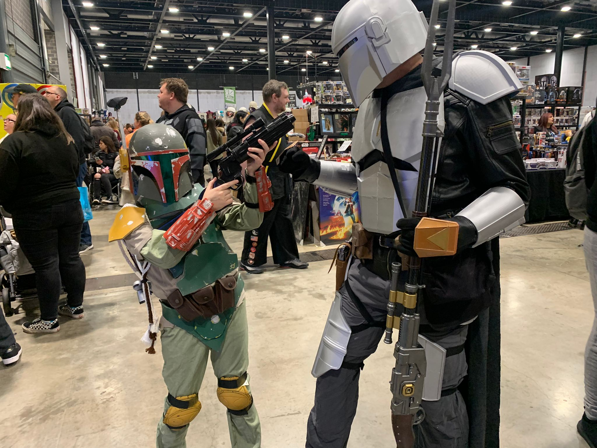
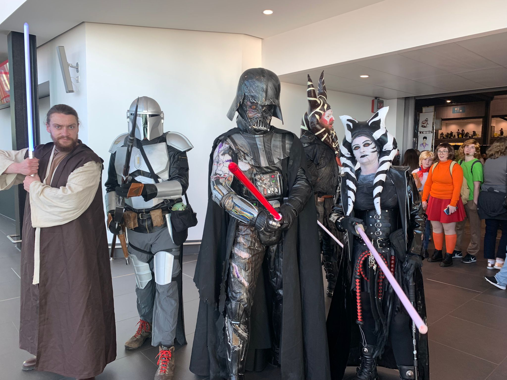
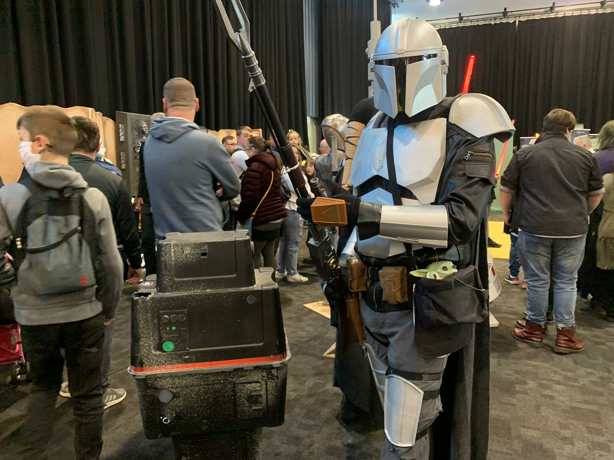

Mandalorian Costume
I'll just start this page from the offset by saying that 3D printing is a new and interesting area but it too has one of its own problems. An example of this is copyright, and Interlectual Property. Disney owns the rights to the Mandalorian. I have not generated any income from this post and only printed the design based off freely available designs online on websites such as Mymini factory. If anyone has a problem with the content of this article then please contact (edward@brodbelt.com).
So the Mandalorian is a relatively new TV series, based around the Star Wars Franchise. My dad and brother were planing on going to Comic con this year and my dad wanted a costume. Having recently watched the Mandalorian he asked if I could print him one.
From here I started to try and find the best models online of the different parts of the mandalorian costume, I've tried to sumarise them in the table below. The Mandalorain Costume is quite complicated and even though I didn't create any of the design files to print it. I thought it was worth while including here because of the sheer amount of work it took to get the parts printed. I learnt a lot about my printer from the 100's of hours it took to print this costume.
| Costume Part | Link | Notes | Did I Print it? |
|---|---|---|---|
| Helmet | MyMiniFactory Rob Pauza | Great Model, comes pre split up in different ways so can fit on smaller print beds. Can print all of the pieces without supports | Y |
| Rifle | MyMiniFactory Rob Pauza | Same as above, easy to print | Y |
| Chest and Abdomen Plates | Thingiverse Forge_Master | Was difficult to find but, great model well designed. Only downside is logo on inside but can easily paint/ fill over if desired | Y |
| Shoulder Plates | Thingiverse Mr_Corn | Great Design, easy to print | Y |
| Wrist and Hands | Thingiverse Mr_Corn | Same design, great | Y |
| Blaster | MyMiniFactory Ricardo Betancourt | Great design, downside is pre split into component groups rather than individual pieces | Y |
| Thigh | Thingiverse Forge_Master | Found through Chest Pieces, great model, easy to print | Y |
| Back | Thingiverse Forge_Master | Haven't personally printed because time didn't allow but this is the one I would have used. As such I've included it here for completeness | N |
| Hip and Kidneys | Thingiverse Forge_Master | Haven't personally printed because time didn't allow but this is the one I would have used. As such I've included it here for completeness | N |
| Greave and Knee | Thingiverse Forge_Master | Haven't personally printed because time didn't allow but this is the one I would have used. As such I've included it here for completeness | N |
I started by printing the essentials parts to the costume, in pretty much the order they are in the table. In this project my only part was the organisation of the printing of the parts. My dad wanted to do all the finishing, painting etc.
It allowed me to experience a large volume of printing, and being relatively new to 3D printing at this point it allowed me to experiment with all the different slicer settings. I found it interesting to see how other people go about creating designs and seeing what the limits are with printing, in ensuring you get a good quality print, and minimising the amount of waste material from support structures etc. I also got to play around with cutting the models up and trying to make the most efficient use of the space that my Prusa print bed has to offer. Overall I found the experience very thought provoking and my dad was happy with the finished product.
I've included a few pictures of the final costume below:
|  |  |
|  |  |